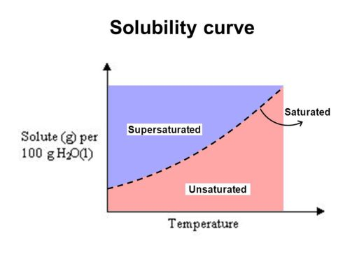
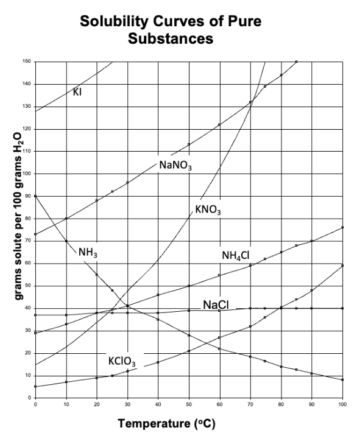
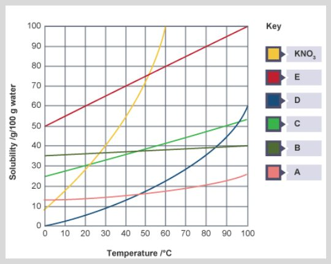

4.1 Solubility Trends
The water molecule is V-shaped and polar: positive at the hydrogen end and negative at the oxygen. Its ability to dissolve a great variety of substances is so effective that it is called the universal solvent, and many natural chemical reactions happen in water.
| Salts containing | Soluble | Insoluble |
|---|---|---|
| Sodium (Na+), potassium (K+), ammonium (NH4+), nitrate (NO3−), ethanoate (CH3COO−) | All | None |
| Bromide (Br−), chloride (Cl−), iodide (I−) | Most are soluble | Lead(II) (Pb2+), silver (Ag+), CuBr2, CuI2 |
| Sulfate (SO42−) | Most are soluble | Barium (Ba2+), calcium (Ca2+), lead(II) (Pb2+), silver (Ag+) |
| Carbonate (CO32−) | Group 1 ions, ammonium (NH4+) | Most are insoluble |
| Phosphate (PO43−) | Group 1 ions, ammonium (NH4+) | Most are insoluble |
| Hydroxide (OH−) | Group 1 ions, ammonium (NH4+) | Most are insoluble |
Solubility trends, adapted from the VCAA data booklet.
Practice questions
- Which anions are mostly soluble?
- Which anions are mostly insoluble?
- Which group of the periodic table produces ions of high solubility?
- Name the ions that are always soluble.
- Name the ions that are mostly insoluble.
- Nitrate, ethanoate (always), chloride, bromide, iodide and sulfate (mostly).
- Carbonate, phosphate and hydroxide.
- Group 1 (plus ammonium).
- Sodium, potassium, ammonium, nitrate and ethanoate.
- Carbonate, phosphate and hydroxide (except with Group 1 ions and ammonium).
- Sodium nitrate:
- Potassium phosphate:
- Lead hydroxide:
Type the formula without subscripts (case-sensitive), then choose soluble or insoluble.
| Compound | Formula | Soluble? |
|---|---|---|
| sodium bromide | ||
| magnesium hydroxide | ||
| ammonium carbonate | ||
| silver chloride | ||
| calcium carbonate | ||
| potassium hydroxide | ||
| lead iodide | ||
| aluminium phosphate | ||
| barium sulfate | ||
| lithium carbonate |
The booklet also lists lead sulfide (PbS), iron(II) sulfide (FeS) and potassium sulfide (K₂S). Sulfides aren't in this table, but in general sulfides are insoluble except those of Group 1 and ammonium, so PbS and FeS are insoluble and K₂S is soluble. Lithium carbonate counts as soluble by the table (Group 1), though in reality it is only slightly soluble.
4.2 Reading a Solubility Curve
Solubility is the maximum amount of solute that will dissolve in a given amount of solvent at a specified temperature and pressure. There are three types of solution:
- Saturated: contains the maximum amount of dissolved solute for that amount of solvent, temperature and pressure.
- Unsaturated: contains less dissolved solute than a saturated solution.
- Supersaturated: contains more dissolved solute than a saturated solution at the same temperature. It is made by dissolving the solute at a high temperature and cooling it slowly and carefully.

A solubility curve plots how much of a solute dissolves in 100 g (or 100 mL) of water at different temperatures.

Practice questions (use the graph above)
Which salt is the least soluble in water at 10 °C?
Which salt has the greatest increase in solubility from 30 °C to 60 °C?
KNO₃ rises from about 46 g to about 105 g, an increase of nearly 60 g.
Which salt's solubility is affected least by a change in temperature?
At 20 °C, a saturated solution of sodium nitrate contains 100 g of solute in 100 mL of water. How many grams must be added to saturate the solution at 50 °C?
At 50 °C about 113 g dissolves in 100 mL. Using the booklet's figure of 100 g at 20 °C: 113 − 100 = 13 g. (Note: the graph actually shows about 88 g at 20 °C; using that value, 113 − 88 = 25 g.)
At what temperature do saturated solutions of potassium nitrate and sodium nitrate contain the same mass of solute per 100 mL of water?
The KNO₃ and NaNO₃ curves cross at about 71 °C (about 132 g per 100 g water).
Which two salts have about the same solubility at approximately 19 °C?
Both are about 38 g per 100 g of water near 20 °C.
How many grams of ammonium chloride must be added to 1 litre of water to produce a saturated solution at 50 °C?
At 50 °C, 50 g dissolves in 100 mL, so in 1000 mL: 1000 × (50 ÷ 100) = 500 g.
A saturated solution of potassium nitrate is made at 60 °C in 100 mL of water. How many grams precipitate if it is cooled to 30 °C?
About 104 g dissolves at 60 °C and about 46 g at 30 °C: 104 − 46 ≈ 58 g crystallises out.
If 50 mL of water saturated with KClO3 at 25 °C is evaporated to dryness, how many grams of dry salt remain?
At 25 °C, about 10 g dissolves per 100 mL, so 50 mL holds 50 × (10 ÷ 100) = 5 g.
30 g of NaCl is dissolved in 100 mL of water at 45 °C. What extra mass of NaCl must be added to make the solution saturated at 80 °C?
At 80 °C about 40 g of NaCl dissolves: 40 − 30 = 10 g.
What is the smallest volume of water, in mL, needed to completely dissolve 46 g of KNO3 at 10 °C?
At 10 °C about 22 g dissolves per 100 mL. Volume = 46 ÷ 22 × 100 ≈ 209 mL.
Assume all the solute has dissolved.
- 40 g NaCl in 100 mL of water at 80 °C:
- 120 g KNO3 in 100 mL of water at 60 °C:
- 80 g NaNO3 in 100 mL of water at 10 °C:
- 20 g NaCl in 50 mL of water at 30 °C:
- 12 g NH4Cl in 20 mL of water at 60 °C:
- 22 g NaNO3 in 25 mL of water at 20 °C:
Scale to 100 mL first. d. 20 g in 50 mL = 40 g per 100 mL (NaCl holds about 38 g at 30 °C). e. 12 g in 20 mL = 60 g per 100 mL (NH₄Cl holds about 55 g at 60 °C). f. 22 g in 25 mL = 88 g per 100 mL (NaNO₃ holds about 88 g at 20 °C).
A solubility curve for a gas such as ammonia (NH3), read from left to right, would:
The solubility of gases decreases as temperature increases (see NH₃ on the graph).
4.3 Data Analysis Task: The Universal Solvent
Water dissolves many substances found in nature, so it usually contains more than water particles. Even rainwater dissolves gases and solids before it reaches the ground, flushing dust and pollution from our cities. The dissolved solids in rain depend on location: southern Victoria has about 10 mg/L of salt and northern Victoria 1–2 mg/L, adding up to about 20 kg of salt per hectare per year.
| Type of water | Total solids (mg/L) |
|---|---|
| Rain | 29.5 |
| Surface runoff | 97 |
| Deep well | 438 |
| Spring | 282 |
Seawater has a lot of dissolved salt. If an Olympic pool were filled with seawater, it would contain:
| Element (ion) | Amount (kg) |
|---|---|
| Chloride | 37 500 |
| Sodium | 20 000 |
| Magnesium | 2 500 |
| Sulfate | 1 700 |
| Calcium | 800 |
| Potassium | 750 |
| Bromide | 130 |
| Carbonate | 54 |
| Silicate | 6 |
| Fluoride | 3 |
The most common substance (ion) dissolved in seawater is .
What is the total mass of dissolved solids in the Olympic-sized pool?
37 500 + 20 000 + 2 500 + 1 700 + 800 + 750 + 130 + 54 + 6 + 3 = 63 443 kg.
Calculate the percentage by mass of chloride.
37 500 ÷ 63 443 × 100 = 59.1%.
Calculate the percentage by mass of fluoride.
3 ÷ 63 443 × 100 = 0.0047%.
Calculate the percentage by mass of carbonate.
54 ÷ 63 443 × 100 = 0.085%.
- There are many carbonates on Earth, but very little in seawater. What does this suggest about the solubility of carbonates?
- Why does water from deep wells have more dissolved solids than rainwater?
- Most carbonates are insoluble in water (e.g. calcium carbonate in limestone), so they stay as rock rather than dissolving into the sea.
- Well water has travelled through soil and rock for a long time, dissolving minerals along the way; rainwater has only picked up small amounts from the air.
4.4 Precipitation Reactions
Sometimes when two solutions are mixed, an insoluble white or coloured solid appears. It may sink or stay suspended and is called a precipitate.
A precipitation reaction is one in which dissolved substances react to form one or more solid products. Many involve an exchange of ions between ionic compounds in solution (also called double displacement or metathesis reactions). They form coral reefs and kidney stones, are used in industry, and are central to chemical analysis, such as spot tests for metal ions.
| Compound | Soluble? | Explanation |
|---|---|---|
| lead nitrate | Soluble | All nitrates are soluble |
| potassium iodide | Soluble | Iodides are soluble except Ag+, Pb2+ |
| lead iodide | Insoluble | Iodides are soluble except Ag+, Pb2+ |
| potassium nitrate | Soluble | All nitrates are soluble |
The states in brackets (s, l, g, aq) show the state of each substance.
- Sodium chloride + ammonium sulfate:
- Potassium sulfate + barium nitrate:
- Lead nitrate + ammonium carbonate:
Spectator ions
In precipitation reactions, some ions don't take part. These are spectator ions, easily spotted in an ionic equation:
Only the silver and iodide ions react, forming the precipitate. Na+ and NO3− don't change: they are spectator ions. The net ionic equation is:
For each reaction, decide the solubility of each compound, identify the spectator ions and write the net ionic equation.
- Lithium chloride + silver nitrate → lithium nitrate + silver chloride
- Copper(II) chloride + potassium bromide → copper(II) bromide + potassium chloride
- Silver chloride is insoluble; the others are soluble. Spectators: Li⁺ and NO₃⁻. Net: Ag⁺(aq) + Cl⁻(aq) → AgCl(s)
- By the booklet's table, CuBr₂ is insoluble. Spectators: K⁺ and Cl⁻. Net: Cu²⁺(aq) + 2Br⁻(aq) → CuBr₂(s). (In reality copper(II) bromide is quite soluble, so you may not see a precipitate.)
4.5 Practical 3: Precipitation Reactions
| Reactants | Precipitate? |
|---|---|
| Copper(II) nitrate + iron(II) sulfate | |
| Copper(II) nitrate + sodium hydroxide | |
| Copper(II) nitrate + sodium iodide | |
| Sodium chloride + iron(II) sulfate |
Copper(II) and iodide ions actually react to form off-white copper(I) iodide and brown iodine, so the mixture looks brown.
4.6 Test Your Understanding: Solubility
| Reactants | Result |
|---|---|
| MgCl2 + AgNO3 | |
| NaBr + Pb(NO3)2 | |
| Mg(NO3)2 + NaI | |
| CuSO4 + NaOH | |
| (NH4)2CO3 + Fe(NO3)2 | |
| Ba(NO3)2 + Li2SO4 | |
| ZnSO4 + KBr | |
| K3PO4 + Pb(NO3)2 | |
| NaNO3 + K2SO4 | |
| KI + NaCl | |
| Na2CO3 + CaCl2 |
The booklet writes "K₂Br"; potassium bromide is KBr.
Write the complete balanced equation for each reaction that forms a precipitate.
MgCl₂ + 2AgNO₃ → 2AgCl(s) + Mg(NO₃)₂
2NaBr + Pb(NO₃)₂ → PbBr₂(s) + 2NaNO₃
CuSO₄ + 2NaOH → Cu(OH)₂(s) + Na₂SO₄
(NH₄)₂CO₃ + Fe(NO₃)₂ → FeCO₃(s) + 2NH₄NO₃
Ba(NO₃)₂ + Li₂SO₄ → BaSO₄(s) + 2LiNO₃
2K₃PO₄ + 3Pb(NO₃)₂ → Pb₃(PO₄)₂(s) + 6KNO₃
Na₂CO₃ + CaCl₂ → CaCO₃(s) + 2NaCl
- iron nitrate + → iron hydroxide + potassium nitrate
- sodium sulfate + barium nitrate → sodium nitrate +
- silver nitrate + zinc chloride → +
- lead nitrate + magnesium chloride → magnesium nitrate +
The precipitates are iron hydroxide, barium sulfate, silver chloride and lead chloride.
- Define solubility.
- Why is water called the universal solvent?
- Solubility is the maximum amount of a substance that can dissolve in a fixed amount of solvent at a given temperature.
- Water is polar, so it can dissolve a huge range of ionic and polar substances: its charged ends surround and separate the ions or molecules.

At what temperature do potassium nitrate and compound C have the same solubility?
The KNO₃ (yellow) and C (light green) curves cross at about 22 °C, at about 31 g per 100 g water.
How much of compound E will dissolve in 50 g of water at 20 °C?
E dissolves about 60 g per 100 g at 20 °C, so in 50 g of water: 30 g.
At what temperature will 5 g of compound D saturate 50 g of water?
5 g in 50 g = 10 g per 100 g. Curve D reaches 10 g at about 30 °C.
What mass of potassium nitrate is deposited if a saturated solution in 50 g of water is cooled from 60 °C to 40 °C?
Per 100 g: about 100 g at 60 °C and about 54 g at 40 °C, so 46 g. For 50 g of water: 23 g.
BaCl2(aq) + K2SO4(aq) → BaSO4(s) + 2KCl(aq)
- Write the complete ionic equation. b. What are the spectator ions? c. Write the net ionic equation.
- Ba²⁺(aq) + 2Cl⁻(aq) + 2K⁺(aq) + SO₄²⁻(aq) → BaSO₄(s) + 2K⁺(aq) + 2Cl⁻(aq)
- K⁺ and Cl⁻
- Ba²⁺(aq) + SO₄²⁻(aq) → BaSO₄(s)